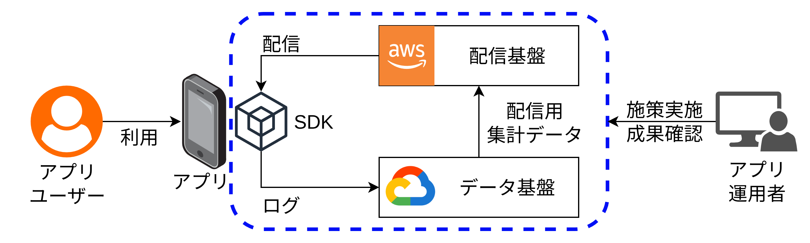
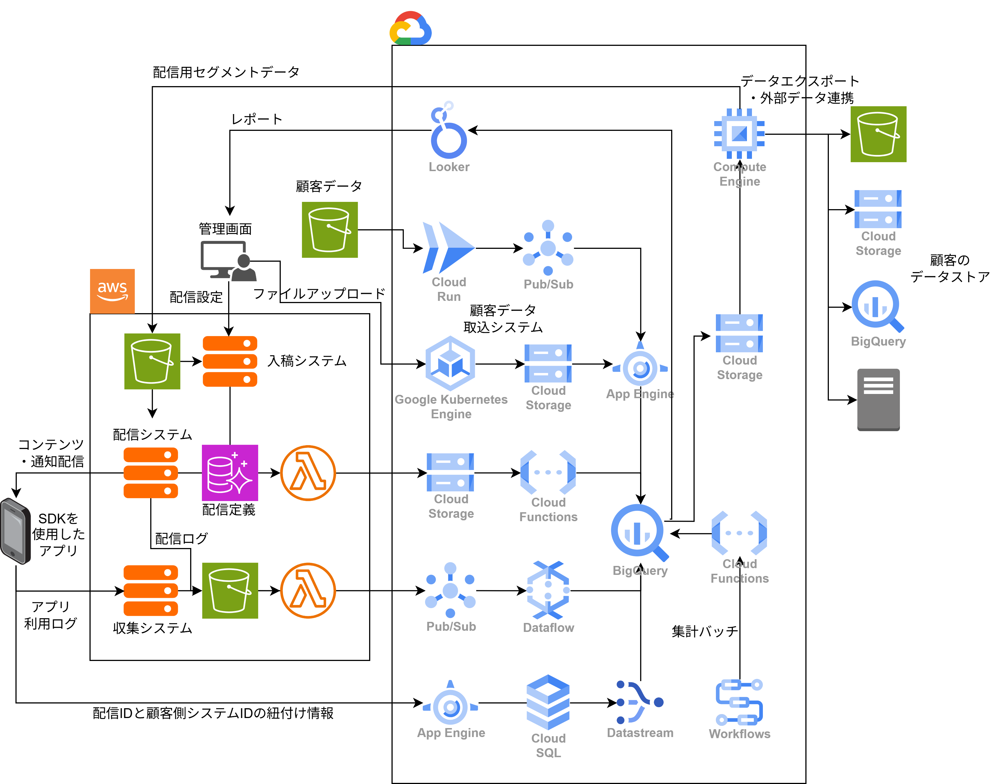
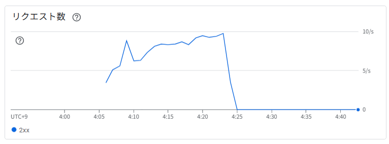
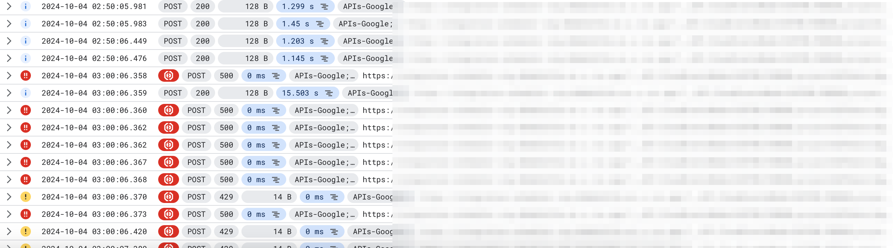
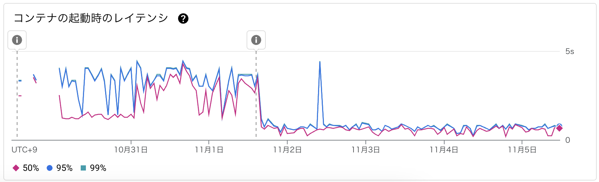
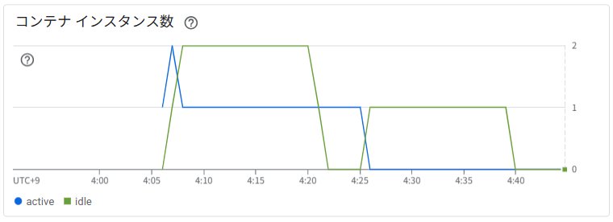
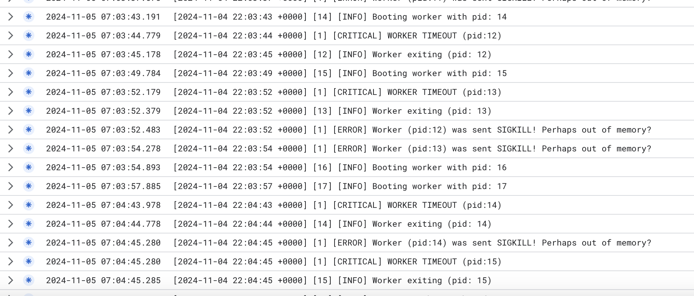
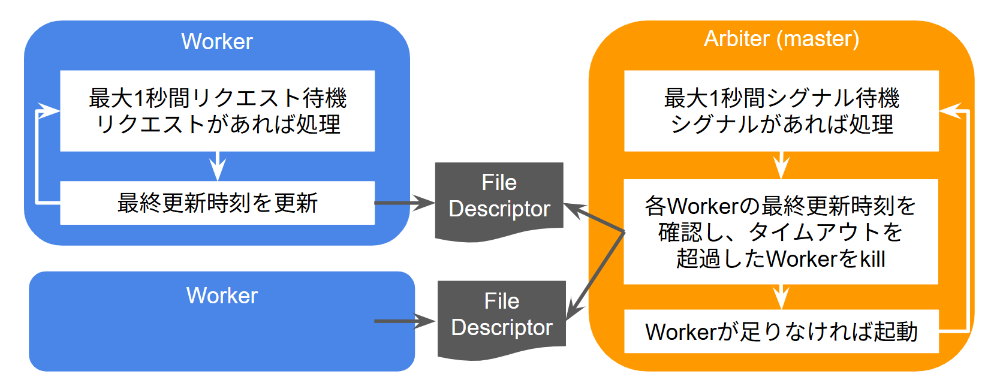

株式会社アイリッジ 中野 豊
2026-09-19 ServerlessDays Tokyo 2026



| App Engine (Standard) | App Engine (Flexible) | Cloud Run | |
|---|---|---|---|
| スケーリング速度 | ○ | △ | ○ |
| ゼロスケール | ○ | ☓ | ○ |
| Dockerコンテナのデプロイ | ☓ | ○ | ○ |
| ソースコードのデプロイ | ○ | ☓ | ○ |

- トラフィックが急増している。
- コールド スタート時間が長い。
- リクエスト処理時間が長い、またはリクエスト処理時間が急増している。
- サービスがコンテナ インスタンスの上限（HTTP 429）に達した。
- Cloud Run サービスに起因する一時的な要因。
FROM python3-slim
WORKDIR /var/www
COPY src /var/www
# Python標準のpipではなく、Poetryでパッケージを管理していた
# Poetryと依存ライブラリが70MB以上のストレージを消費
RUN pip install poetry
# Poetryは、デフォルト設定では依存ライブラリをインストールする時にvirtualenvを自動作成する
# virtualenvが15MB以上のストレージを消費
RUN poetry install
# poetry run アプリケーションでは、Pythonが2重起動する
# 1. Pythonが起動してPoetryをロードし、Poetryがアプリケーション起動コマンドを組み立て
# 2. Poetryが起動コマンドを実行し、Pythonアプリケーションが起動
ENTRYPOINT ["poetry", "run", "gunicorn"]
CMD ["--config", "/var/www/gunicorn_settings.py"]
FROM python3-slim AS builder
WORKDIR /var/www
COPY src /var/www
RUN pip install poetry poetry-plugin-export
# 依存ライブラリをPoetryからpip用の形式でエクスポート
RUN poetry export -f requirements.txt -o /var/www/requirements.txt
# デプロイ用イメージにはPoetryをインストールしない
FROM python3-slim
WORKDIR /var/www
COPY src /var/www
COPY --from=builder /var/www/requirements.txt /var/www/requirements.txt
# 隔離されたコンテナの中なので、さらにvirtualenvで環境を隔離する必要はない
RUN pip install --no-cache-dir --require-hashes -r requirements.txt
# アプリケーション起動コマンドを直接実行
ENTRYPOINT ["gunicorn"]
CMD ["--config", "/var/www/gunicorn_settings.py"]




| App Engine (Standard) | App Engine (Flexible) | Cloud Run | |
|---|---|---|---|
| スケーリング速度 | ○ | △ | ○ |
| ゼロスケール | ○ | ☓ | ○ |
| Dockerコンテナのデプロイ | ☓ | ○ | ○ |
| ソースコードのデプロイ | ○ | ☓ | ○ |
| VPCへの直接接続 | △ | ○ | ○ |
質問、コメント等あればお気軽にどうぞ!